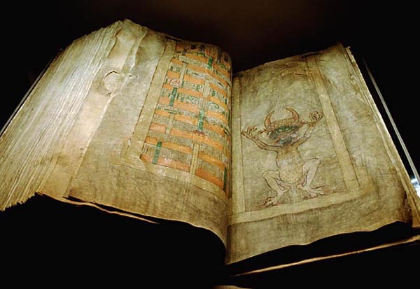

Biblia diabła
Codex Gigas, największy w świecie średniowieczny manuskrypt, „spisany, jak powiadają, w ciągu jednej nocy przez samego diabła”.
Kodeks powstał najprawdopodobniej w benedyktyńskim klasztorze w Podlažicach, w dzisiejszych Czechach. Manuskrypt został później oddany w zastaw klasztorowi cystersów w Sedlcu, a następnie odkupiony przez benedyktyński klasztor w Břevnovie. Od roku 1477 do 1593 przechowywany był w klasztornej bibliotece w Broumovie. W roku 1594 księga została przeniesiona do Pragi, by stać się częścią kolekcji cesarza Rudolfa II Habsburga.
W roku 1648, pod koniec wojny trzydziestoletniej, cała kolekcja Rudolfa została zagrabiona przez szwedzkie wojska. Od roku 1649 manuskrypt jest przechowywany w Kungliga Biblioteket w Sztokholmie. Po 359 latach Codex Gigas powrócił do Pragi — Biblioteka Królewska w Sztokholmie wypożyczyła księgę praskiemu Clementinum, gdzie można ją było obejrzeć od września 2007 do marca 2008 roku.
Legenda głosi, iż manuskrypt sporządził pewien mnich z pomocą samego diabła. Mnich ów dopuścił się grzechu; chcąc uniknąć surowej kary obiecał, że w ciągu jednej nocy stworzy księgę zawierającą całą ludzką wiedzę. Blisko północy zdał sobie jednak sprawę, że nie zdąży samodzielnie ukończyć tego dzieła, toteż sprzedał swą duszę diabłu w zamian za jego pomoc. Diabeł dokończył manuskrypt, zaś mnich z wdzięczności umieścił w księdze jego portret, od którego wywodzi się drugie określenie kodeksu — „Biblia diabła”.